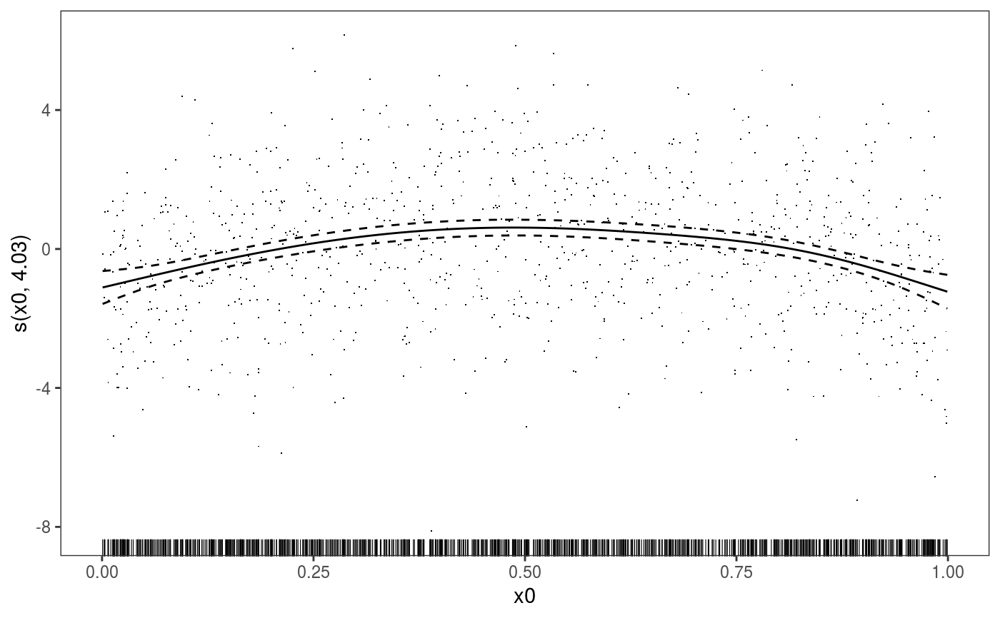
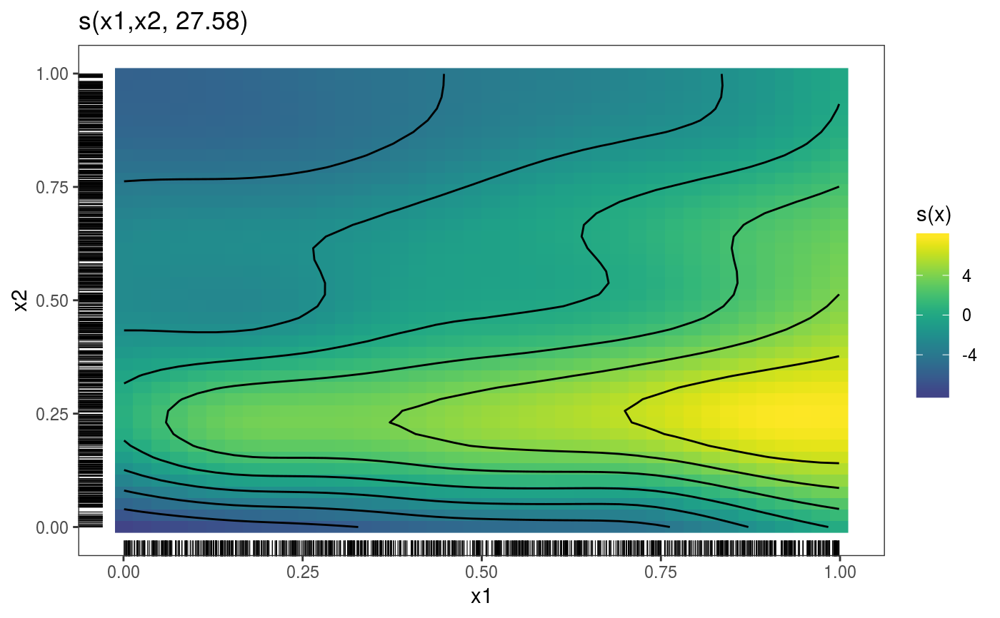

This function converts gam objects into gamViz objects,
for which mgcViz provides several plotting methods.
getViz(o, nsim = 0, post = FALSE, newdata, ...)
| o | an object of class |
|---|---|
| nsim | the number of simulated vectors of responses. A positive integer. |
| post | if |
| newdata | Optional new data frame used to perform the simulations. To be passed to predict.gam and,
if |
| ... | extra arguments to be passed to simulate.gam (if |
An object of class gamViz.
#> Gu & Wahba 4 term additive modelb <- gam(y~s(x0)+s(x1, x2)+s(x3), data=dat, method="REML") b <- getViz(b, nsim = 20) str(b$store$sim) # Simulated responses now stored here#> num [1:20, 1:1000] 1.3 7 2.14 3.62 7.78 ...